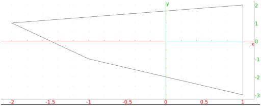

13.10.5 Convex hulls: convexhull
The convexhull command uses the Graham scanning algorithm to
find the convex hull of a set of points.
-
convexhull takes an unspecified number of arguments:
points, a sequence or list of points.
- convexhull(points)
returns the vertices of the convex hull of the points.
Example
Input:
convexhull(0,1,1+i,1+2i,-1-i,1-3i,-2+i)
Output:
To draw the hull, you can use the polygon command with the
output of convexhull (see Section 13.10.3).
Example
Input:
polygon(convexhull(0,1,1+i,1+2i,-1-i,1-3i,-2+i))
Output:
